2025
Member Claims Design System Adoption, Blue Shield of California
Up until 2024 our digital teams did not have centralized guidelines and resources for design and code leading to tech debt and decreased efficiencies. By designing, building, and implementing a design system we are enabling product teams to streamline the design and development process.
Project purpose
Since designing and building the Cerulean Design System, our next step was adopting the system across all portals. I led the adoption of Cerulean on the member claims experience.
How does this work support organizational goals?
Adopting a design system will streamline the design and development process leading to lower overall project costs. A unified look and feel will also lead to a more cohesive user experience resulting in an improved user experience..
Measurable Impact
The below metrics were collected by the developers inspecting the code and by the claims team.
- 88% reusable components
- 35% reduction in lines of code
- 62% reduction in missing elements on out-of-network claim form submissions
Team members
- Diana Rios, Product Manager
- M.K. Cook, Principal Visual Designer
- Jennifer Chapman, Principal Content Designer
- Talia Bowles, Lead Product Designer
- Vikas Lnu, Angular Developer
- Mahmud Karim, Angular Developer
- Rajini Challa, QA Analyst
Analysis
QA collects screenshots and data of the current experience. Some parts of claims had not been touched in years so it was important to understand all the logic and function in the current experience.
Visual 1:1
My priority was to find the best visual component in the design system that matched the existing content and functionality.
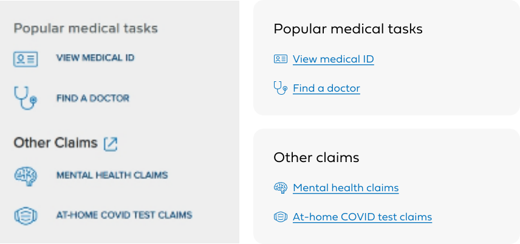
Additional links before & after
Quick Wins
Although functional changes were out of scope, we were able to advocate for impactful content updates since content is a low development lift. Here is an example of a form feedback improvement.
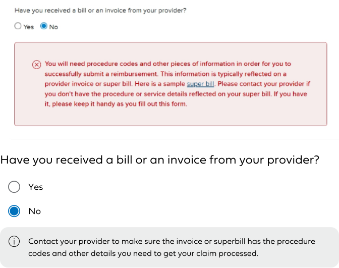
Form feedback before & after
Iterative Design
This was one of the first modules on the site to adopt the design system, which means it could set the tone and establish patterns for many future designs. I took a very iterative approach to the design process.

Claim details iterations
Design System Contributions
While working on claims, I realized the need for clear navigation within larger modules like navigating between medical, prescription, vision, dental within claims. This is when I designed the "Hero tabs" component. (Also card info details, claim details hero)
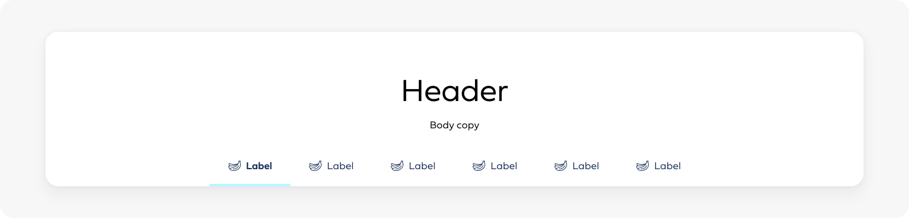
Hero tabs for large screens
This component has since been reused in a number of other reskins and new product designs. It's a predictable pattern for modules that have the medical, prescription, dental, vision categories and works to create hierarchy for modules that exist outside that pattern as well.
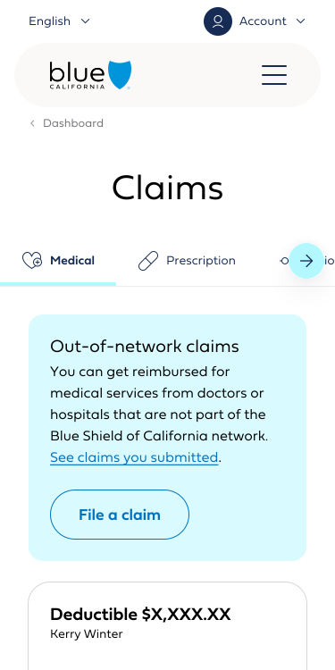
Small screen example of hero tabs usage
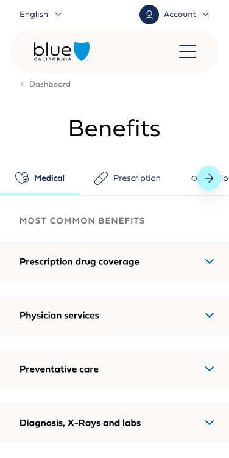
Small screen example of hero tabs usage
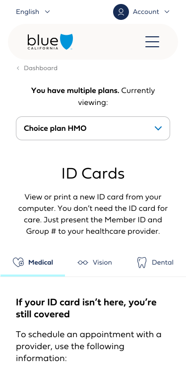
Small screen example of hero tabs usage
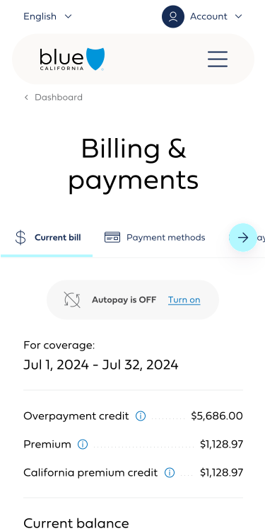
Small screen example of hero tabs usage
Cohesive Claims Experience
Here you can see how cohesive the claims experience is now. The content is varying across each claims page, but it is presented in a visually consistent manner that makes it more predictable and consumable for members.
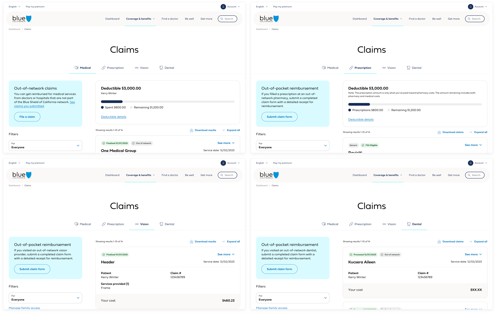
Medical, prescription, vision, dental claim summary pages
Stakeholder Alignment
As we finalized designs or questions came up, we worked with claims partners and past product owners to ensure that we were going in the right direction with the visual design and any content updates.
Roadmap
Medical claims summary and claim details 03/08/25 Medical out-of-network claim form and claims you submitted 04/12/25 Prescriptions claim summary 06/06/25 Medicare medical claim summary and claim details 08/09/25 Dental claim summary and claim details 09/13/25 Vision claim summary and claim details 10/28/25
Development
I joined daily stand-ups and weekly refinement calls to make sure the developers had time to ask questions and to address any edge cases that were revealed during the development process. I also owned the UAT process to ensure the designs were followed correctly in the development process
Before & After Cerulean Adoption
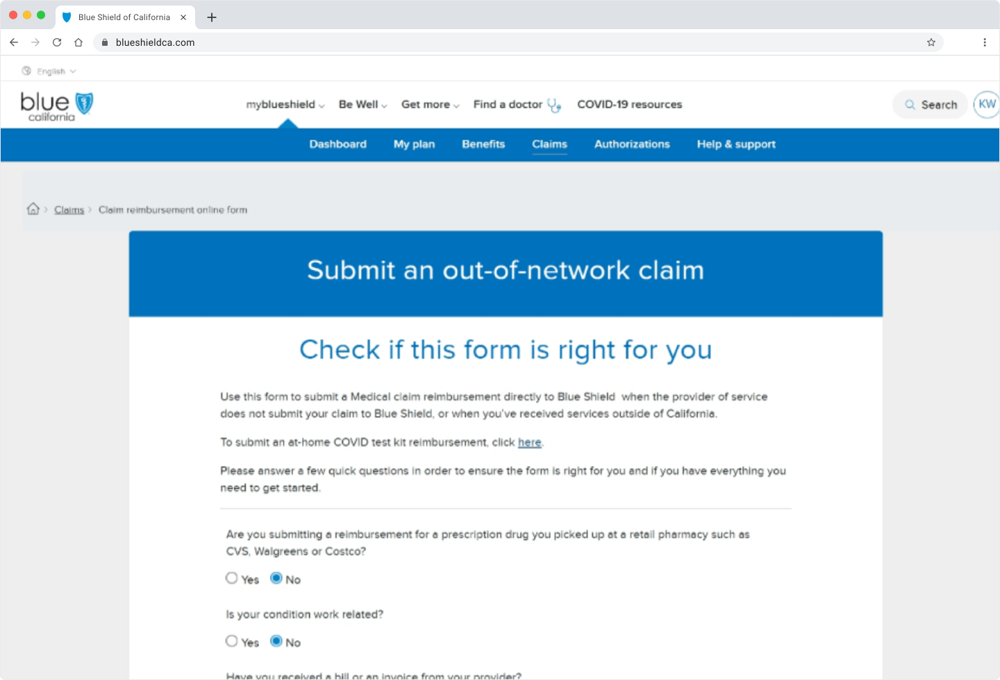
Out-of-network claim form before
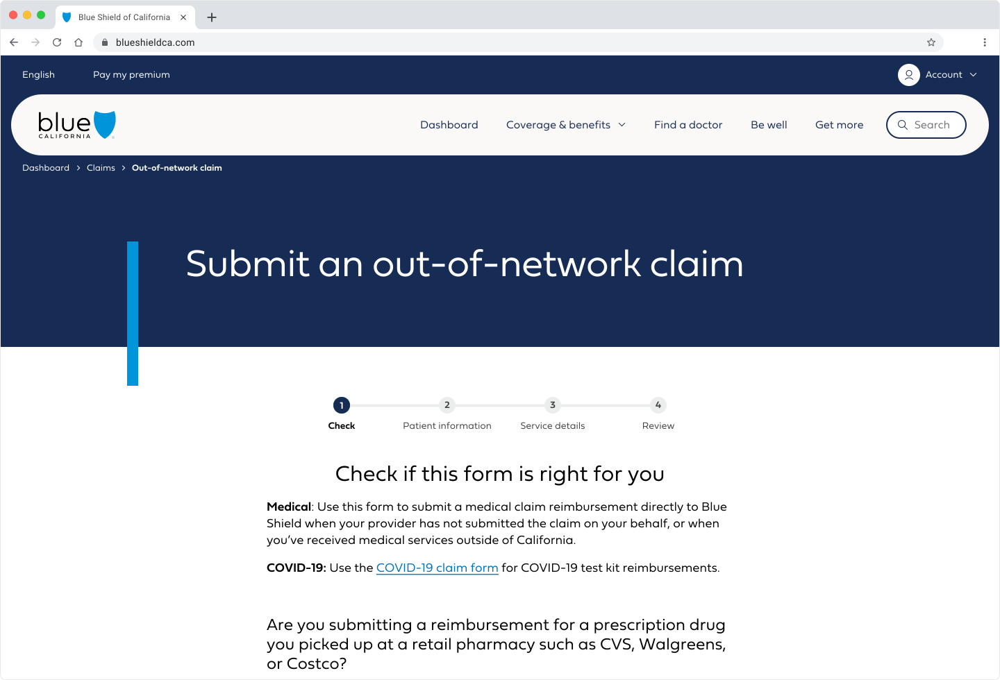
Out-of-network claim form after
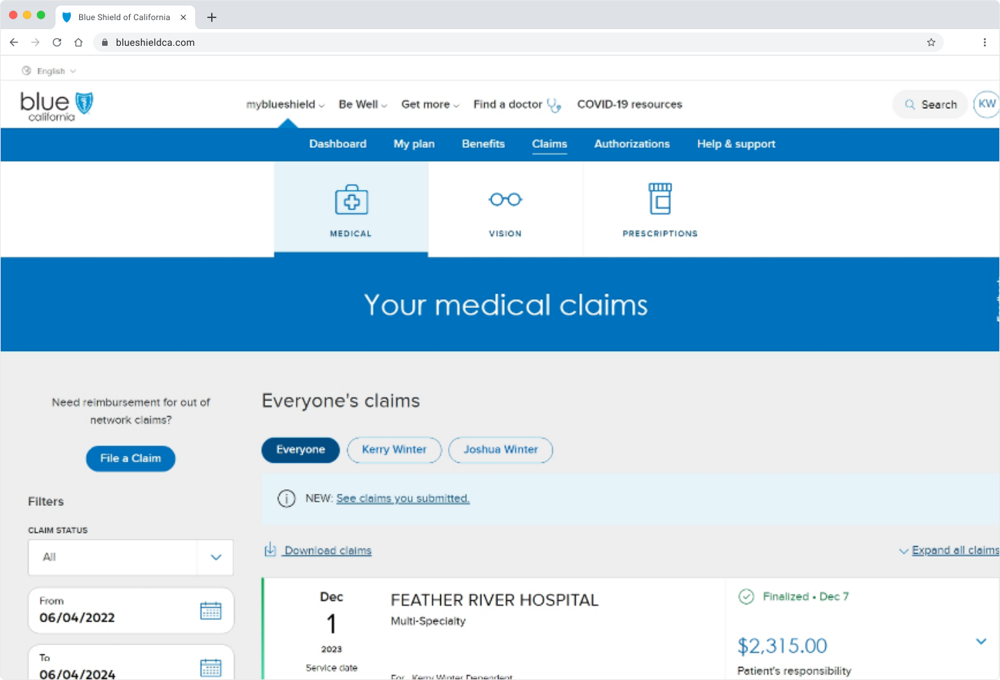
Claim summary before
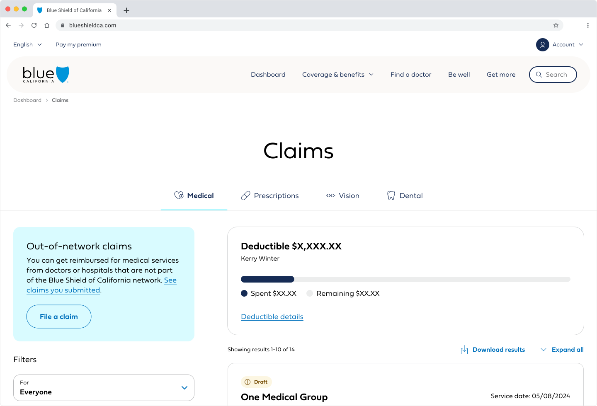
Claim summary after
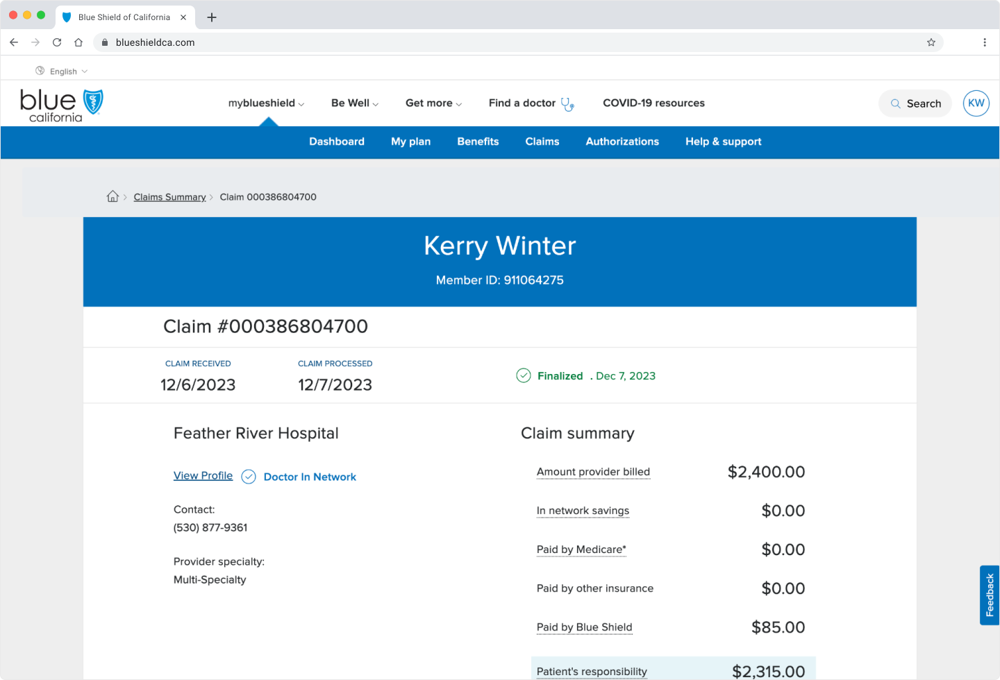
Claim details before
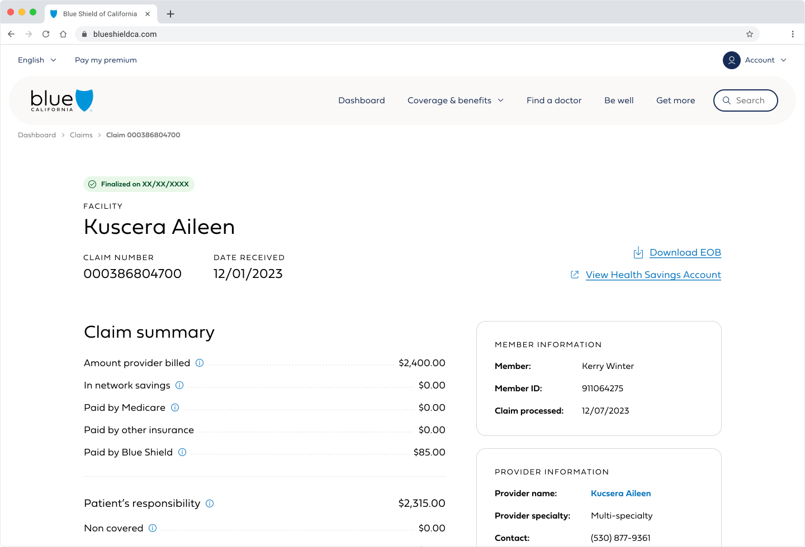
Claim details after
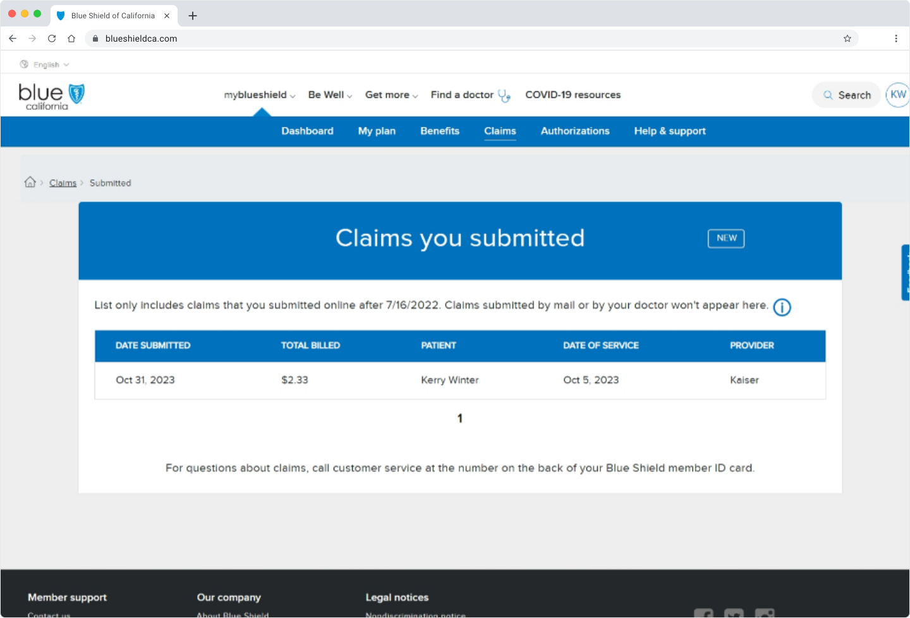
Submitted claims before
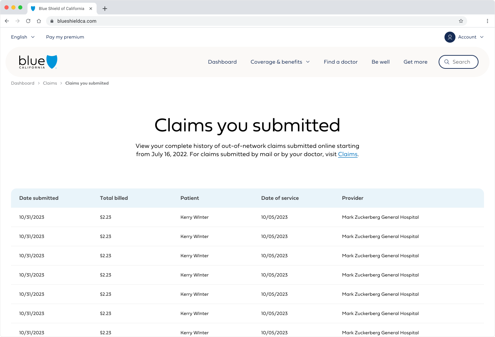
Submitted claims after
Stakeholder Demo
The QA Analyst, Lead Developer, and I conducted stakeholder demos prior to release for digital and non-digital stakeholders to share what changes were being implemented. This helped to demonstrate the impact of the design system and also emphasized that we were not making any functionality changes.